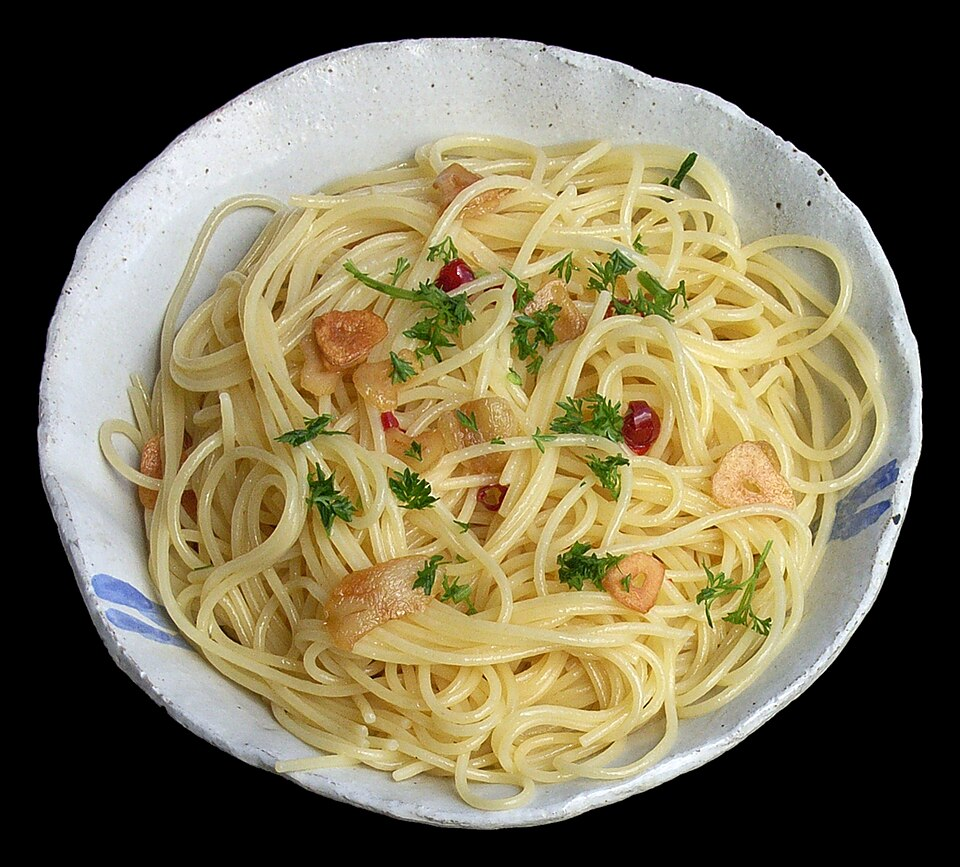

Home
Spaghetti aglio e olio

Description
Another simple, but very tasty dish made of only three ingredients
Ingredients
- Garlic
- Extra virgin olive oil
- Spaghetti
- Salt, pepper
- Yeast flakes for garnish
Steps
- Preheat the pan to low medium heat
- Slice the garlic
- Add a generous amount of oil to the pan
- Add garlic and let it simmer on low heat
- Cook the spaghetti in salted water until almost done
- Drain the pasta, save some of the cooking water
- Add pasta to the pan an finish cooking
- Add some pasta water to thicken it
- Serve with pepper and yeast flakes